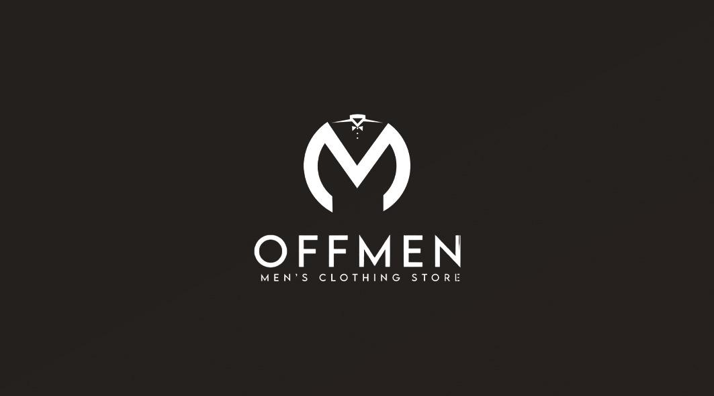

About Us
Offmen designs durable and stylish men's clothing inspired by modern urban life. Our goal is to provide comfort, quality, and confidence. OffMen is a premium men’s clothing brand focused on delivering refined, professional, and contemporary apparel for modern men. We specialize in office wear and smart casual clothing that combines superior fabric quality, precise tailoring, and timeless design. Our mission is to help men present themselves with confidence and professionalism in every setting. Each product at OffMen is carefully selected and crafted to ensure comfort, durability, and a perfect fit, meeting the demands of daily professional life. We are committed to maintaining high standards of quality while offering our collections at competitive prices. Customer satisfaction, attention to detail, and consistent style define our approach to menswear. At OffMen, we believe that true style is effortless, reliable, and built to last. OffMen – Professional Style. Everyday Confidence.